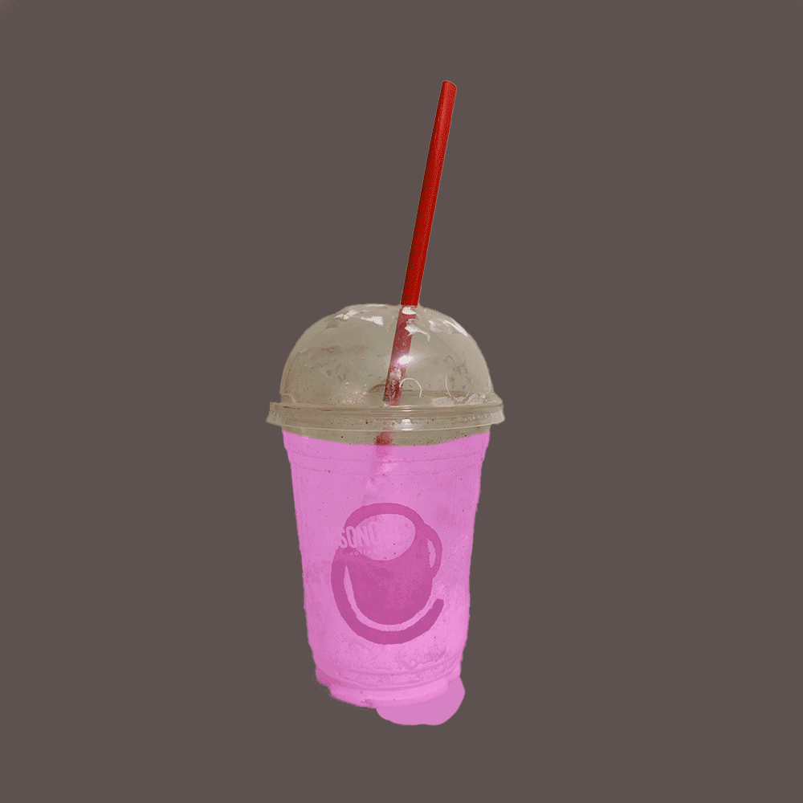
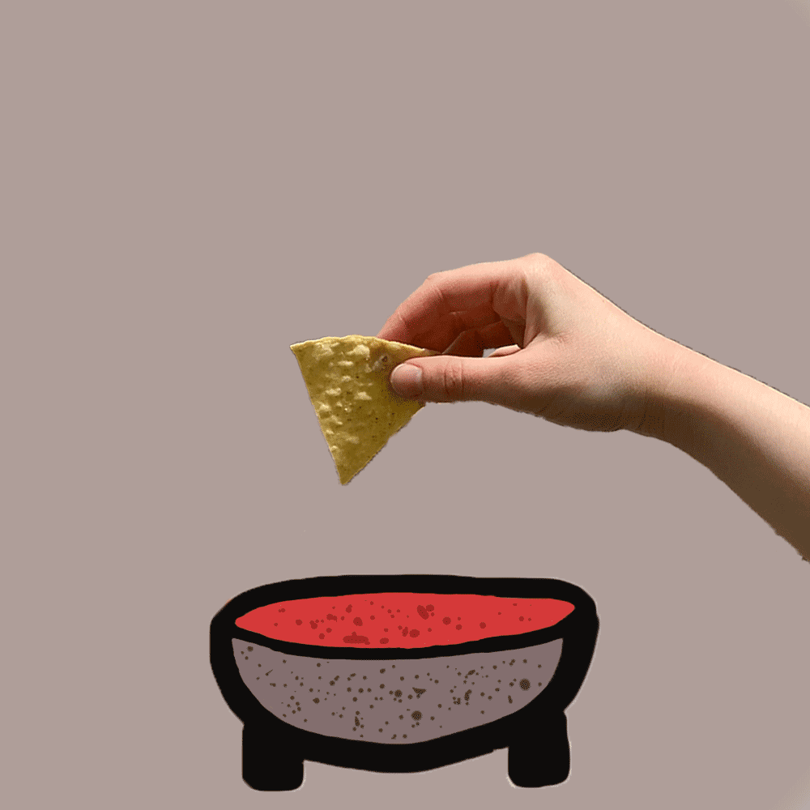
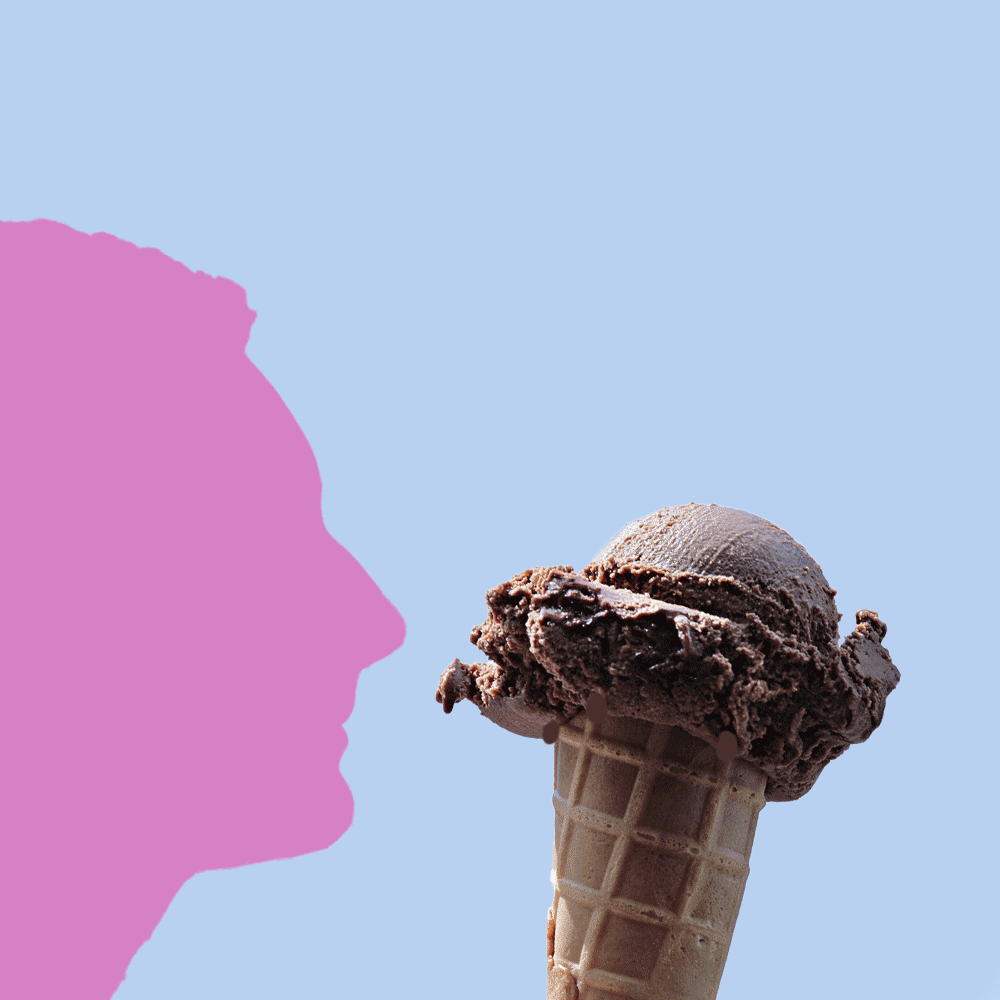

Animated Gif Series
  
Artist Statement:
These three animated gifs were created using Photoshop.
Each of them contains an image that I took- my arm holding a chip, a profile of my face,
and a cup that I got at a coffee shop. Additionally, the first and last have a drawn element-
the bowl of salsa and the liquid. The ice cream picture was taken from the Internet. They are
all about food!
Back